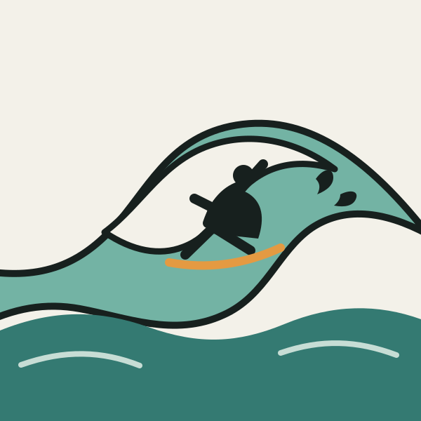
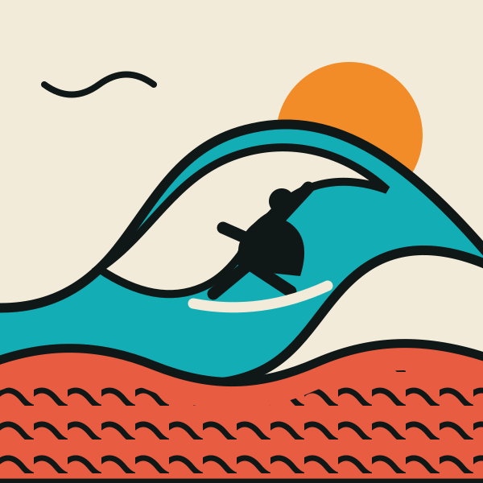

Elastic black line, exaggerated gesture, friendly energy, and a restrained coastal palette.

Rhythmic pattern, saturated colour, hard contrast, and a much stronger cultural presence.
The same big, clean swell interpreted through two different illustration systems.

Elastic black line, exaggerated gesture, friendly energy, and a restrained coastal palette.

Rhythmic pattern, saturated colour, hard contrast, and a much stronger cultural presence.